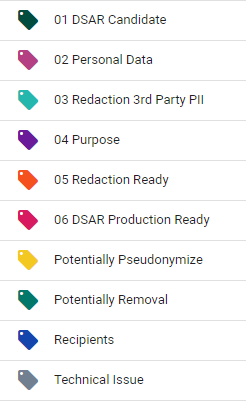
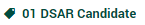
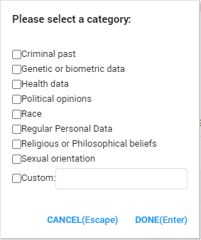
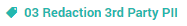
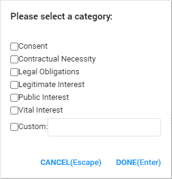
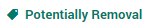
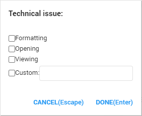

Tag
While searching the documents, it is important to remember to assign the appropriate tag to the document. For instance, if the document viewed has personal data in it, the Personal Data tag can be applied. Tagging documents can ensure correct categorization of the data. ZyLAB ONE makes the tagging of documents simple and clear.
For handling a data subject access request, it is essential to search through a lot of data and filter the relevant documents. The tag functionality helps sort documents based on their relevance.
Tags can be used to determine whether there are any special category personal data in the documents. If that is the case, the processing of such data must be justified. The purposes of processing can also be determined and specified by the use of tags. In addition, tags can be used to indicate when a document needs to be redacted and when the redaction is ready.
All kinds of tags and subtags can be added to the ZyLAB ONE software, if necessary. For GDPR Compliance, there are the following, predefined tags:

After selecting a tag, it is possible that more subtags will appear. This prevents the Tagging interface from becoming too crowded. For instance, after selecting the Special Personal Data tag, more subtags like Medical information or Religion can be selected.
By default, the following tags can be found in ZyLAB ONE:
- 01 DSAR Candidate

This tag is applied to all relevant documents which contain personal data relating to the requester, such as their name, email address, social security number etc.
- 02 Personal Data

This tag can be applied to all documents containing regular or sensitive personal data. After applying the Personal Data tag, more subtags will appear to specify what kind of special personal data can be found inside the document. The user can add a custom tag. The following categories will appear:

- 03 Redaction 3rd Party PII

This tag can be applied to a document where third party personal data is visible and must therefore be redacted before production.
- 04 Purpose
This tag can be applied in addition to the Personal Data Tag. The Purpose tag can be applied to tag the document with a legal ground, giving the reasoning why the document is being processed lawfully. After applying the Purpose tag, the following subtags will appear:

These subtags are based on the purposes for which personal data can be processed, as stated in article 6 of the GDPR.
- 05 Redaction Ready
This tag can be applied to all documents which have been redacted to indicate that the redaction is complete.
- 06 DSAR Production Ready
This tag is applied once the documents have been redacted and reviewed. This tag indicates that the documents are ready to be produced.
- Potentially Pseudonymize
This tag can be applied to a document that has a legal basis for processing of personal data, but the user only wants authorized members to view the personal data or pseudonymize the data for privacy safety.
- Potentially Removal

This tag can be applied to documents that are no longer relevant or not up-to-date. Please note that only authorized users can actually remove data from the ZyLAB ONE software.
- Technical Issue

This can be applied to a document that has a technical issue.
After choosing this option, the following subtags can be applied:

Importantly, it is entirely up to the client to choose which kinds of personal
data should be tagged as such. Personal data should be tagged in accordance with the goal in mind. For example, if an organization decides that it only wants to anonymize the Social Security Number in all of their documents, then the organization should only tag documents with a Social Security Number. The same applies when an organization wants to anonymize all personal data; The organization should then tag all the documents containing all personal data, including names, emails, phone numbers etc.
The workflow below demonstrates the order in which tags must be used: